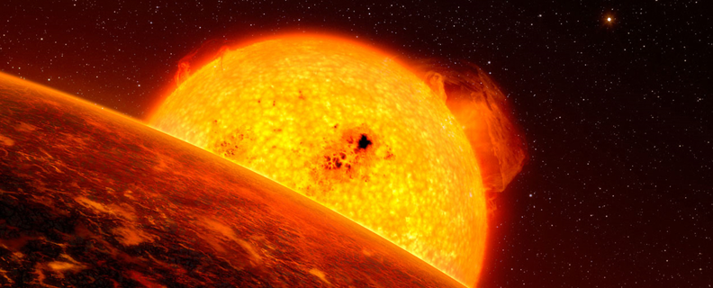

By Jeff Hecht, Nature magazine on February 17, 2016
The Truth about Exoplanets
SPACE
Astronomers are beginning to glimpse what exoplanets orbiting distant suns are actually like.
The trickle of discoveries has become a torrent.
Little more than two decades after the first planets were found orbiting other stars, improved instruments on the ground and in space have sent the count soaring: it is now past 2,000. The finds include 'hot Jupiters', 'super-Earths' and other bodies with no counterpart in our Solar System — and have forced astronomers to radically rethink their theories of how planetary systems form and evolve.
Yet discovery is just the beginning. Astronomers are aggressively moving into a crucial phase in exoplanet research: finding out what these worlds are like. Most exoplanet-finding techniques reveal very little apart from the planet's mass, size and orbit. But is it rocky like Earth or a gas giant like Jupiter? Is it blisteringly hot or in deep-freeze? What is its atmosphere made of? And does that atmosphere contain molecules such as water, methane and oxygen in odd, unstable proportions that might be a signature of life?
The only reliable tool that astronomers can use to tackle such questions is spectroscopy: a technique that analyses the wavelengths of light coming directly from a planet's surface, or passing through its atmosphere. Each element or molecule produces a characteristic pattern of 'lines' — spikes of light emission or dips of absorption at known wavelengths — so observers can look at a distant object's spectrum to read off what substances are present. “Without spectroscopy, you are to some extent guessing what you see,” says Ian Crossfield, an astronomer at the University of Arizona in Tucson.
TRANSIT SPECTROSCOPY
The first exoplanet in orbit around a Sun-like star was discovered in 1995, when astronomers Michel Mayor and Didier Queloz of the Geneva Observatory in Switzerland detected a regular, back-and-forth wobble in the movement of star 51 Pegasi. They concluded that it was caused by the gravity of a planet at least 150 times the mass of Earth — roughly half the mass of Jupiter — orbiting the star every 4 days or so. Other discoveries followed as exoplanet fever took hold, and led telescope managers to make more observing time available for planet-hunting.
The list of finds soon sparked an idea for astronomer David Charbonneau of the Harvard-Smithsonian Center for Astrophysics in Cambridge, Massachusetts. He reasoned that when a planet 'transits', or passes in front of a star, molecules in its atmosphere will absorb some of the starlight, and leave their spectroscopic fingerprints in it. Might it be possible to detect those fingerprints?

Kepler-186f, the first known Earth-sized exoplanet in a star's habitable zone (artist's impression). - NASA Ames/JPL-Caltech/T. Pyle
To find out, Charbonneau decided to look for sodium. “It's not particularly abundant,” he says, “but sodium has very clear spectroscopic features” — excited molecules of it emit two very strong lines of light, which give sodium street lights their familiar yellow-orange colour. When the sodium is backlit, the light that floods through it has dark bands at the same points of the spectrum, and Charbonneau hoped that these would be comparatively easy to spot.
RECOMMENDED FOR YOU
Ebola Survivor's Blood Holds Promise of New Treatment
HEALTH
Functional Artificial Mouse Sperm Created in a Dish
HEALTH - BIOTECH
Test Marks Milestone for Deep-Space Gravitational Wave
THE SCIENCES - PHYSICS
Could a Lack of Water Cause Wars?
CLIMATE